Aeon Refractor Case -
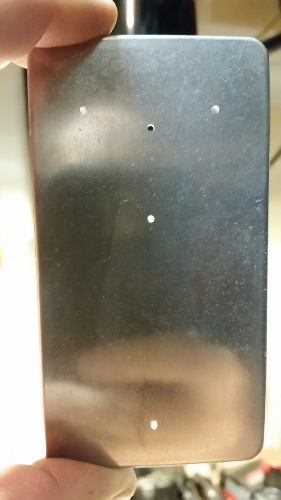Refractor - This is a Klon Centaur clone. I started with laying out the hole spacing.
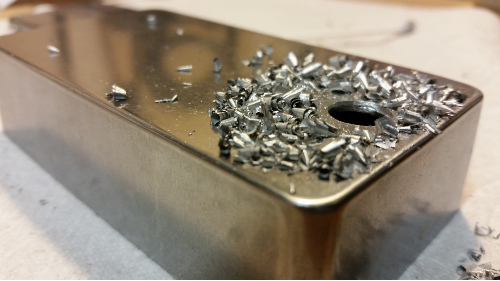Enlarge the holes - After the knob layout was set, the holes get the final drill size.
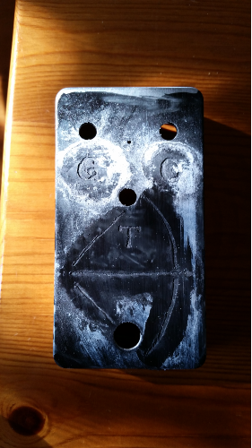Etching - I painted the surface with clear nail polish, then scratched the knob labels and artwork with a stick. Then used a 6amp DC battery charger, vinegar and a Q-tip to remove material from the non-painted areas.
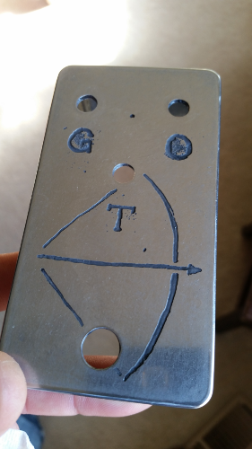Polish - Smooth out the surface and the artwork begins to show up. The areas inside the letters G and O are a little to agressively etched, but it's unique. It can be left like this, but this one is ready to receive paint.
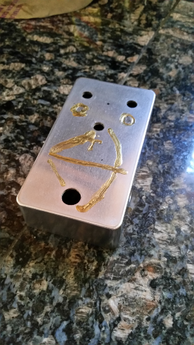Painting - The paint is applied to fill the etching. Then it will be polished smooth again to produce a flush colored effect.
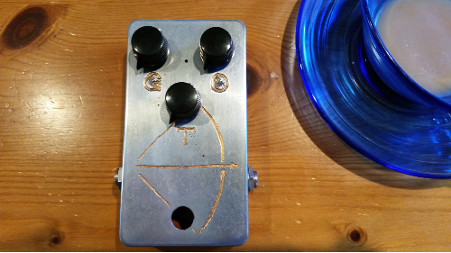Final Polish - This is the last time it gets polished, then assembled. It could be clear coated for a more refined look, but I like this one just like it is. This one gets some miniature Davies knobs to emulate it's namesake.
Refractor Board
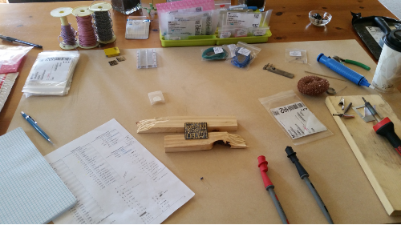Work Space - List of materials, parts, solder and coffee. Each part gets found and checked with a multimeter before getting pushed through the board and checked off the list.
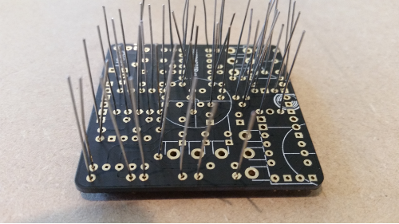Time to Solder - Typically parts are soldered from shortest to tallest. The resisters are usually first, and the electrolytic capcitors are usually last.
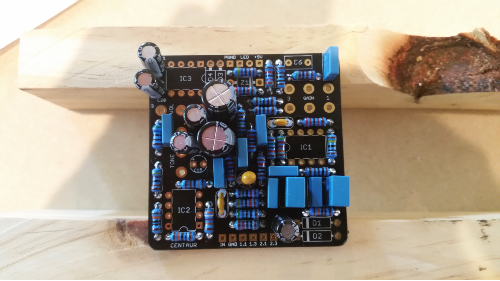Top View - This has most of the parts applied except the sockets for the IC's and a few odd sized parts.
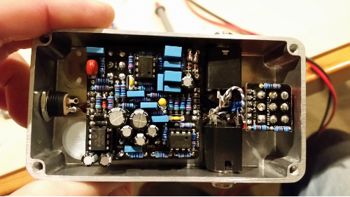Assembly Complete - Everything fits snug with plenty of room. You can see the daughter board on the switch and the covered jacks on this one. Box capacitors were used to keep a cleaner look.
Aeon Blues Breaker
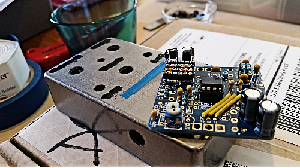Blues Breaker - This is a Blues Breaker clone. You can see the paint process is identical to the Refractor. From this angle you can see the socketed clipping stages to make adjustments. So far no changes are needed.
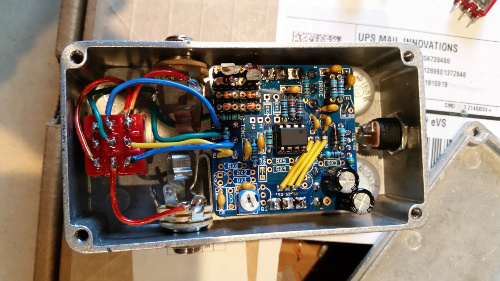Assembly Complete - Straight forward as you can see. I direct wired the switch on this one, but used a daughter board on the next project. I didn't have a preference They both worked fine.
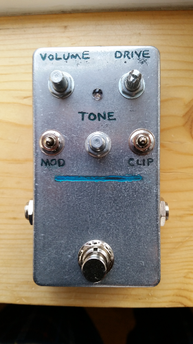Top View The fine lettering was a little more fiddly than I hoped. It's readable, but I needed to etch the line a little deeper to hold more paint.
SHO

SHO - The SHO is a boost circuit that offers unity gain to 60X, while adding high-end clarity by utilizing a 5 million ohm input impedance.